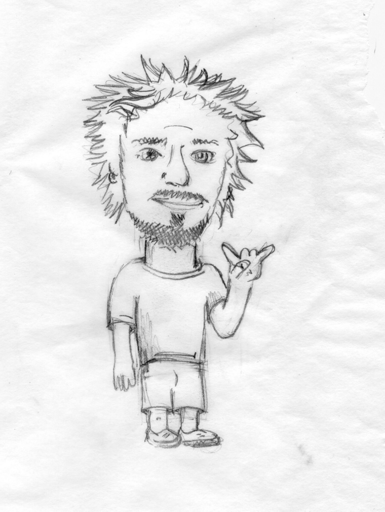

Gareth Townsend
I'm a software developer from Melbourne, Australia. I grew up Vienna, Austria. People sometimes confuse the two. One day I would like to live in Europe again.
Currently I'm working for Clear Holdings in Melbourne. We're using Ruby on Rails and a special blend of agile methodologies. Compared with the Bachelor of Computer Science (Software Engineering) that I completed in 2007 with distinctions, it's refreshing.
If you want to talk shop you can find me hanging out with the Melbourne Ruby Users Group or the Melbourne Cocoaheads (which I founded in July 2007).
When the planets align correctly I like to try my hand at surfing on the weekends (I suck, if you're wondering). Otherwise I'll be hiding behind a camera lens somewhere. Be sure to say hi if you spot me.
Or maybe you would just prefer to stalk me on the internet. Twitter. Flickr. Tumblr. github